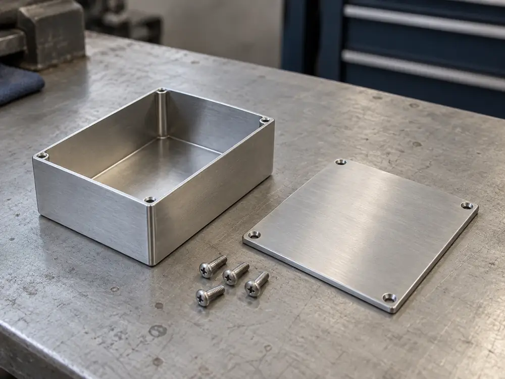
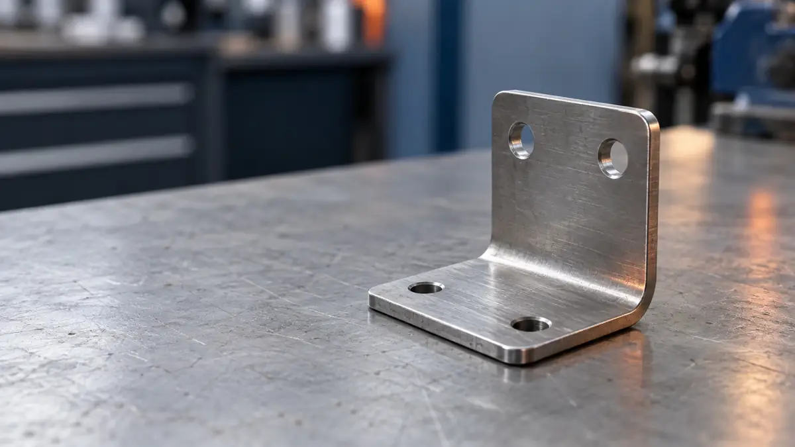
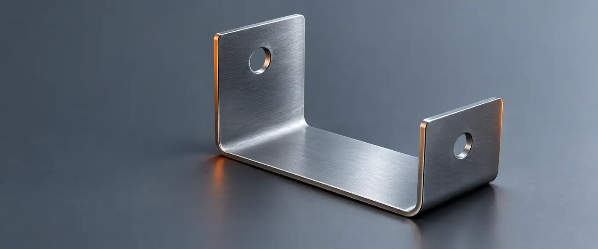

精密板金 ／ 架空県結ノ浦市 工業団地 ／ 鉄・ステンレス・アルミ・銅 t0.5〜6.0mm ／ 試作 1〜500個
薄板の切断・曲げ・溶接。
加工できる範囲を表で公開しています。

ベンダー（曲げ機）曲げ長さ 最大 2,000mm
下型と突き当て角度 ±0.5°（鉄）
切断を終えた板最大 1,200 × 2,400mm
材質 × 板厚の対応（抜粋）
- 切断・曲げとも可
- 要相談（切断のみ・形状・数量による）
- 不可
| 材質 ＼ 板厚(mm) | 0.5 | 0.8 | 1.0 | 1.6 | 2.0 | 3.2 | 4.5 | 6.0 |
|---|---|---|---|---|---|---|---|---|
| SPCC鉄・冷間圧延鋼板 | 板厚0.5mm: 対応 | 板厚0.8mm: 対応 | 板厚1.0mm: 対応 | 板厚1.6mm: 対応 | 板厚2.0mm: 対応 | 板厚3.2mm: 対応 | 板厚4.5mm: 不可 | 板厚6.0mm: 不可 |
| SUS304ステンレス | 板厚0.5mm: 対応 | 板厚0.8mm: 対応 | 板厚1.0mm: 対応 | 板厚1.6mm: 対応 | 板厚2.0mm: 対応 | 板厚3.2mm: 要相談 | 板厚4.5mm: 要相談 | 板厚6.0mm: 不可 |
| A5052アルミ | 板厚0.5mm: 不可 | 板厚0.8mm: 対応 | 板厚1.0mm: 対応 | 板厚1.6mm: 対応 | 板厚2.0mm: 対応 | 板厚3.2mm: 要相談 | 板厚4.5mm: 不可 | 板厚6.0mm: 不可 |
| C1100銅 | 板厚0.5mm: 要相談 | 板厚0.8mm: 要相談 | 板厚1.0mm: 要相談 | 板厚1.6mm: 要相談 | 板厚2.0mm: 不可 | 板厚3.2mm: 不可 | 板厚4.5mm: 不可 | 板厚6.0mm: 不可 |
t3.2を超える鉄は切断のみ（△）。全8材質の表と表面処理は 材質と板厚 にあります。
4つの工程と、それぞれの範囲
どの工程も自社の設備で行います。公差は形状・板厚・数量で変わる目安で、保証値ではありません。

レーザー切断鉄・ステンレス・アルミ
- 板厚
- t0.5–6.0mm
- 最大寸法
- 1,200×2,400
- 公差の目安
- ±0.1mm〜

曲げV・L・Z曲げ、ヘミング
- 板厚
- t0.5–3.2mm
- 長さ
- 2,000mmまで
- 角度
- ±0.5°〜

溶接TIG・スポット
- 板厚
- t0.5–4.0mm
- 大きさ
- 1,000×1,000まで

試作一式組立前の単品まで
- 数量
- 1個から
- 板厚
- t0.5–4.5mm
できないことは、見積もりの前に
範囲外の加工は、見積もりの前にお伝えします。合う加工先が分かる場合はご紹介します。
| 範囲外の加工 | この工場の上限 | 代わりにできること |
|---|---|---|
| 板厚6mmを超える切断・曲げ | 切断 t6.0 ／ 曲げ t3.2 | 厚板・製缶は扱っていません |
| 長さ2,000mmを超える曲げ | 曲げ長さ 2,000mm | 分割して溶接する案は相談できます |
| 切削・旋盤加工、鋳物 | 板金のみ | 板金の範囲だけを請け負います |
| 塗装・めっきの自社施工 | バリ取り・ヘアラインまで | 協力先へ手配します（表面処理） |
| 500個を超える継続量産 | 1–500 個 | 数量によっては他社をご紹介します |
| 図面も寸法もない現物の複製 | 寸法の分かる資料 | 寸法を書いたメモがあれば見積もりできます |

問い合わせから見積もりまで
- 当日
図面を送る
フォームから、図面と数量・希望納期を送ります。
- 1 営業日
図面を確認
技術担当が加工できるかを確かめ、不明点を質問します。
- 2 営業日以内
見積もりを回答
金額・納期と、できない点があればその理由を書面で。
- ご判断
発注するか決める
見積もりだけで終えても、費用はかかりません。

送るもの
- 図面
- PDF / DXF / STEP手書きの寸法図も可
- 材質と板厚
- 未定なら、用途を書いてください
- 数量
- 複数の数量で見積もることもできます
- 希望納期
- 「◯月中」のような幅でもかまいません

決まっていない項目があっても、
そのまま送ってください。
足りない情報は、図面を読んだうえでこちらから質問します。
図面の取り扱い：お預かりした図面は見積もりと製作のためだけに使います。ご要望があれば、秘密保持契約を結びます。